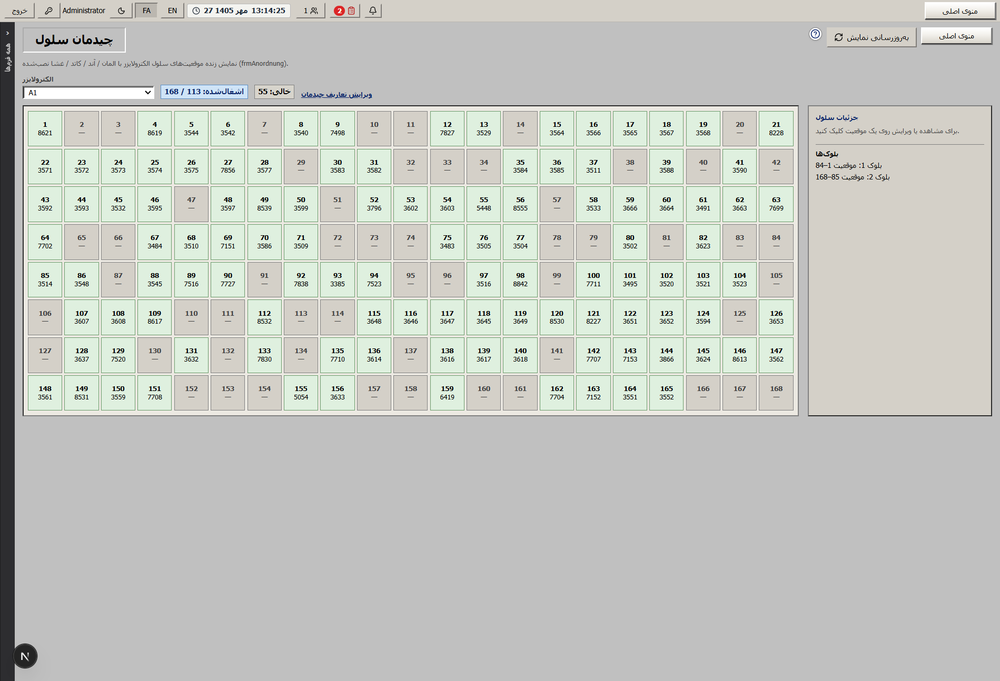
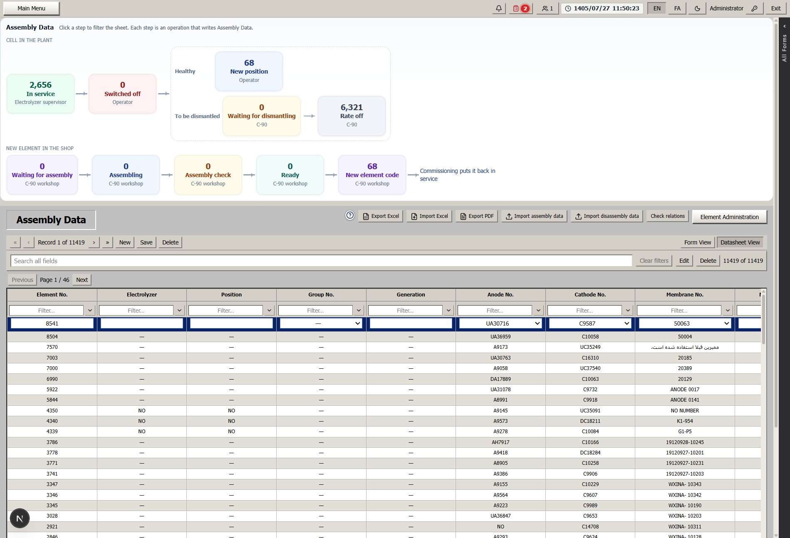
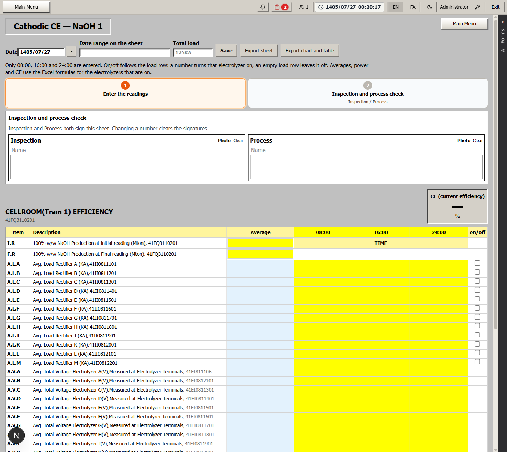
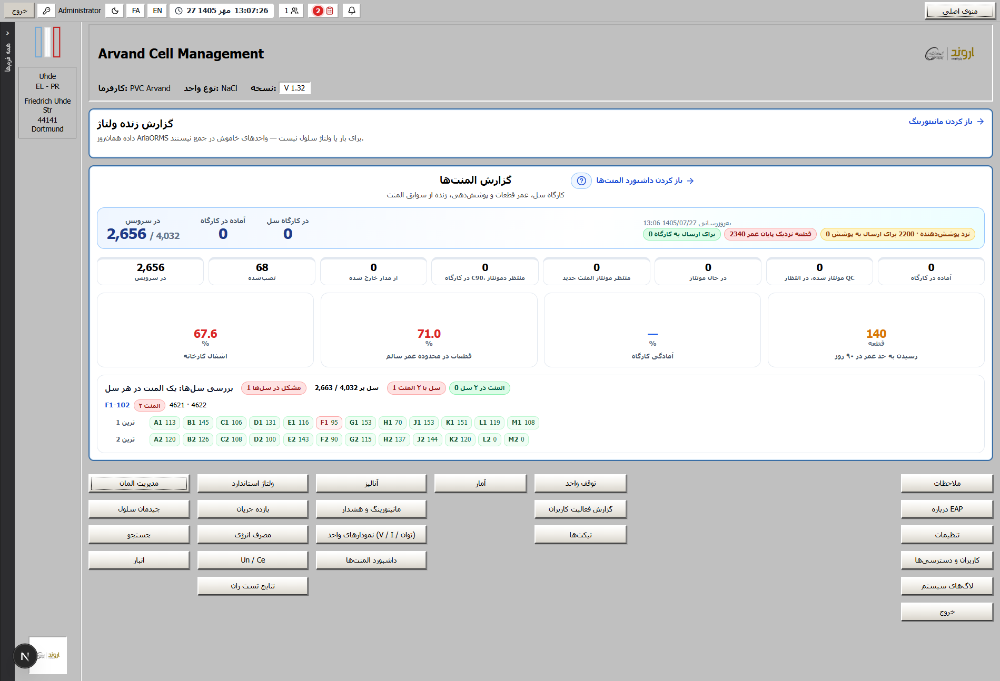
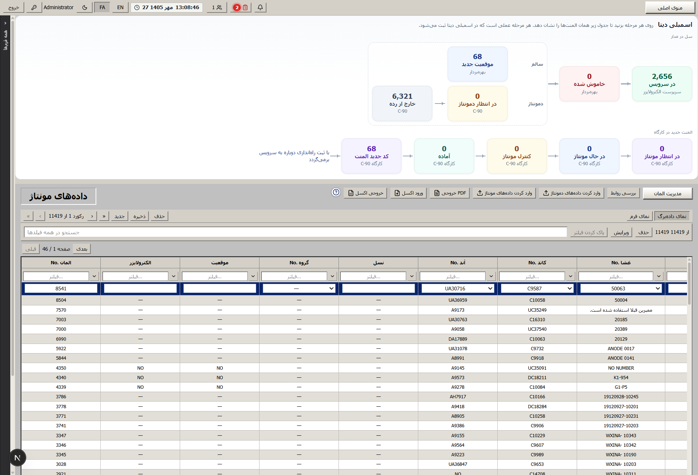
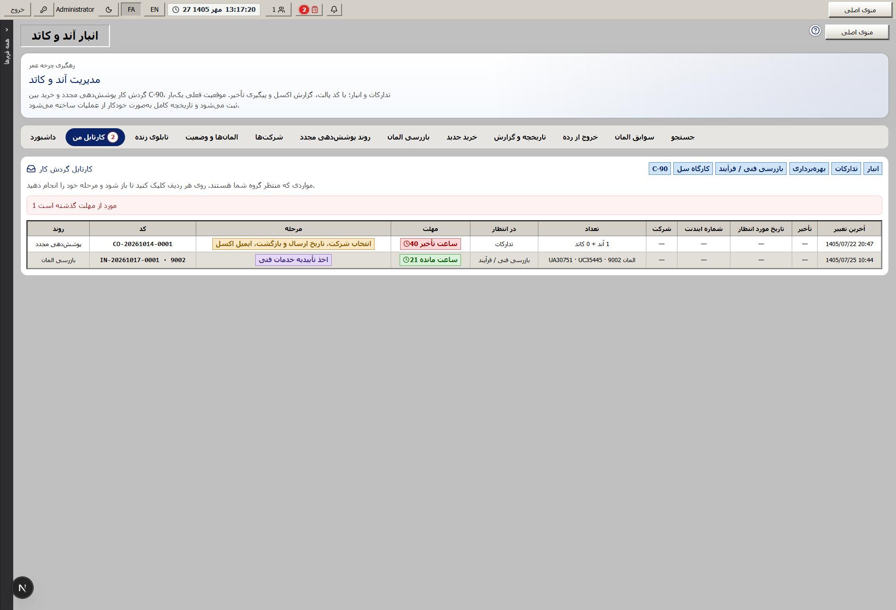
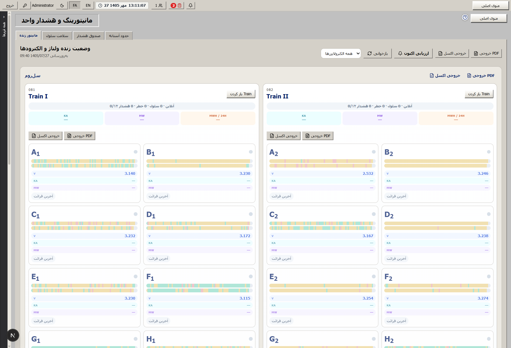
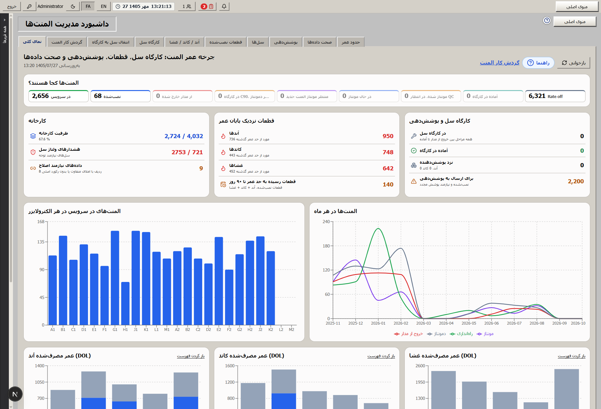
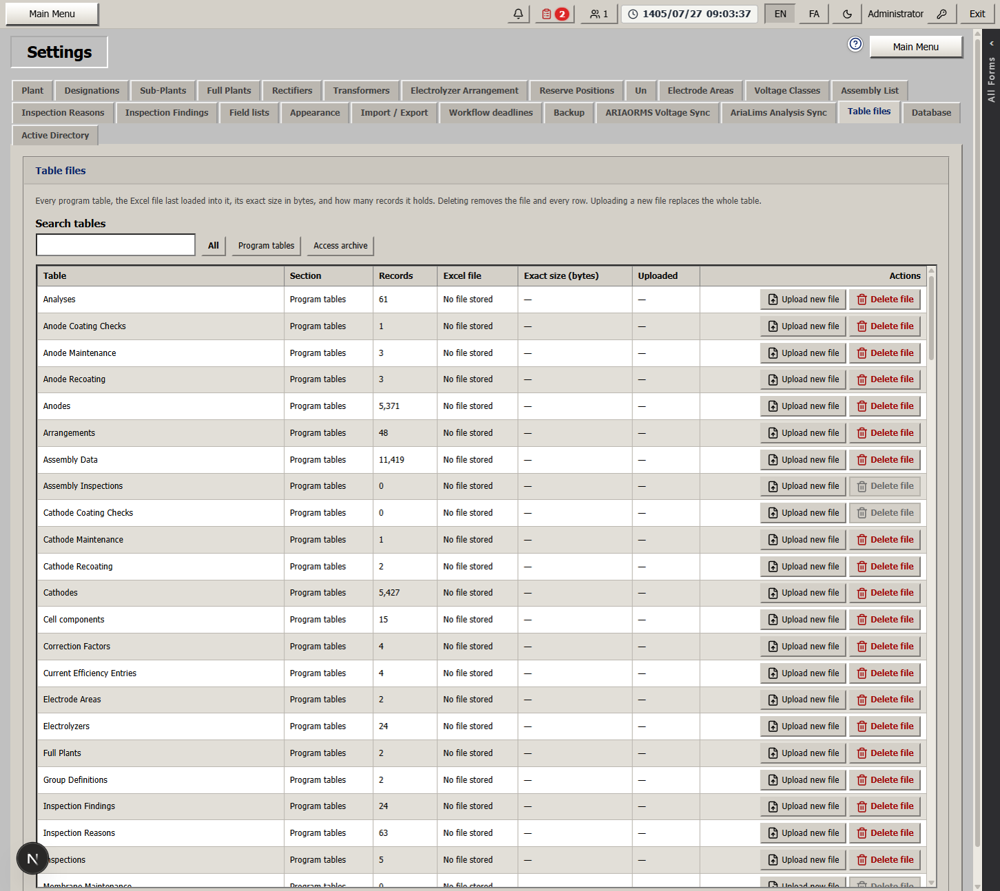

سطح کلر
سریال، پوشش، شرکت و عمر پوشش روی یک هویت میمانند. رأی بازرسی مشخص میکند این آند به چرخه برگردد، دوباره پوشش بگیرد، یا از رده خارج شود.
پتروشیمی اروند · واحد کلر–آلکالی
سل یک ردیف در جدول نیست. یک المان است با سه قطعه، یک جایگاه در زنجیره الکترولایزر، و یک سرنوشت که باید دستبهدست معلوم شود.
این روایت برای نشان دادن خودِ کار است: نرمافزار طراح چه سازوکاری برای اداره قطعات و مونتاژ ساخته بود، در سالهای میانی چه چیزی از آن جدا شد، و برنامه وب چطور همان قرارداد را با صاحب، مهلت و راه بازگشت زنده کرده است.
تمرکز روی گزینه، فایده و سازوکار است. هر بخش را میشود مثل یک صفحه خواند. با فلش بالا و پایین بین بخشها جابهجا میشوید.
۰۱ · واحد
واحد کلر–آلکالی پتروشیمی اروند، نمک و برق را به سه محصول تبدیل میکند: گاز کلر در سمت آند، سود در سمت کاتد، و هیدروژن همراه سود. غشا این دو نیمه را از هم جدا نگه میدارد تا محصولها قاطی نشوند و واکنش همانجا که طراح خواسته بماند.
آنچه بهرهبردار هر روز میبیند یک عدد تنها نیست. یک الکترولایزر زنجیرهای از سلهاست، و هر سل جای مشخصی در این زنجیره دارد. اگر یک سل باید بیرون بیاید، بقیه سر جایشان میمانند. پس خروج، یک تصمیم روی همان جایگاه است، نه یک پاککردنِ کل مدار.
ارزش یک برنامه برای این واحد این است که همان زبان شیفت را حفظ کند: نام الکترولایزر، شماره پوزیشن، شماره المان، سریال آند و کاتد و غشا، ساعت بار، و دلیل توقف. اگر این نامها عوض شوند، حافظه سالهای کارخانه از دست میرود.
۰۲ · الکترولایزر
الکترولایزرها از حرف A تا M نام دارند و حرف I در این نامگذاری نیست، چون همان نامی است که سالها در واحد به کار رفته. هر حرف دو واحد دارد: یکی در ترین اول و یکی در ترین دوم. برنامه با همین نامها کار میکند تا شیفت مجبور نشود بین زبان خودش و زبان نرمافزار ترجمه کند.
هر الکترولایزر دو بلوک پوزیشن دارد. پوزیشن، خانه ثابت زنجیره است. المان چیزی است که در آن خانه مینشیند و ممکن است عوض شود. این جدایی مهم است: خانه میماند، ساکنش عوض میشود، و سابقه هر دو باید جدا بماند تا معلوم باشد این پوزیشن دیروز چه المانی داشته و آن المان امروز کجاست.
وقتی یک سل از مدار خارج میشود، برنامه خروج را به همان سل گره میزند. سه سرنوشت ممکن است: سل سالم به پوزیشن دیگری برگردد، در کارگاه بماند تا روز نصب، یا باز شود و قطعاتش هر کدام راه خودشان را بروند. پوزیشنهای کناری در هیچکدام از این حالتها پاک نمیشوند.
۰۳ · چیدمان
چیدمان سلول، جدول پشتیبان نیست. نقشه همان زنجیرهای است که بهرهبردار در سلروم میبیند. هر خانه یک پوزیشن است. خانه پر یعنی المانی که آند و کاتد و غشایش معلوم است. خانه خالی یعنی جایگاهی که هنوز تصمیم نصب نگرفته، یا سلش بیرون آمده و هنوز برنگشته است.
فایده این نقشه این است که درخواست خروج لازم نیست از یک فرم دور شروع شود. بهرهبردار سل را روی خود چیدمان انتخاب میکند و همانجا درخواست را میفرستد. برنامه میداند این درخواست مال کدام الکترولایزر و کدام پوزیشن است، چون از روی خود خانه ساخته شده، نه از یک شماره که کسی جداگانه تایپ کرده باشد.
اگر شماره المانها با پوزیشنها نخواند، اصلاح موردی و پنهان انجام نمیشود. یک بررسی شمارهگذاری برای کارگاه C-90 ساخته میشود تا کل تصویر آن الکترولایزر یکبار دیده شود. شمارهای که با جایگاهش نمیخواند، اگر همان لحظه درست نشود، ماه بعد در جستجو و در مونتاژ دو جواب مختلف میدهد.

۰۴ · المان
المان، واحدی است که در یک پوزیشن مینشیند. تا وقتی سل در سرویس است، آند و کاتد و غشا یک رکورد مونتاژ دارند و شیفت با شماره المان حرف میزند. این جمعبودن عمدی است: بهرهبردار نباید برای دیدن وضعیت یک سل، سه فهرست جدا را با هم جور کند.
روز باز شدن، این جمع از هم جدا میشود. آند سابقه پوشش خودش را دارد، کاتد سابقه و شرکت خودش را، و غشا رویداد تعویض خودش را. اگر برنامه از روز اول این سه هویت را زیر شماره المان قاطی کرده باشد، روز دمونتاژ دیگر معلوم نیست کدام سریال باید به بازرسی برود و کدام باید در انبار بماند.
پس المان هم یک شیء جاری است و هم یک ظرف سابقه. جاری است چون امروز در یک پوزیشن کار میکند. ظرف است چون تاریخ مونتاژ، راهاندازی، خروج و دمونتاژ روی همان رکورد میماند و دفعه بعد که همان قطعات سر هم شوند، زندگی قبلیشان صفر نمیشود.
۰۵ · قطعات
آند سطح کلر است. سریال دارد، پوشش دارد، شرکت پوششدهنده دارد و عمر پوشش دارد. رأی بازرسی روی همین سریال مینشیند: پوشش میتواند خوب باشد، متوسط باشد، برای پوشش مجدد برود، یا Rate off شود. این رأی یک یادداشت کنار برگه نیست؛ درِ مرحله بعد است.
کاتد سطح سود و هیدروژن است و منطق آند را دارد، ولی هویتش جدا میماند. برنامه هر دو را از یک کارتابل پوشش و خرید عبور میدهد، چون صاحبهای مسیر یکی هستند: کارگاه، تدارکات، انبار، شرکت و تعمیرات. با این حال سریال، گارانتی و سابقه شرکت قاطی نمیشود. اگر یک آند برگشته و کاتد هنوز نزد شرکت است، کارتابل دو ردیف جدا نشان میدهد.
غشا دیواره دو نیمه است و تعویضش رویداد جداست. سل میتواند در مدار بماند و فقط غشا عوض شود. برای همین جستجوی تعویض غشا، سابقه غشا و آمار غشا از مسیر پوشش الکترود جدا ماندهاند. کسی که دنبال یک غشا میگردد نباید بین پالتهای پوشش دنبالش بگردد.
سریال، پوشش، شرکت و عمر پوشش روی یک هویت میمانند. رأی بازرسی مشخص میکند این آند به چرخه برگردد، دوباره پوشش بگیرد، یا از رده خارج شود.
همان نظم آند را دارد، با شرکت و گارانتی خودش. کارتابل مشترک است، ولی ردیف و سریال مشترک نیست.
تعویض غشا سل را لزوماً باز نمیکند. سابقهاش جدا جستجو میشود تا با مسیر الکترود یکی نشود.
۰۶ · تولد المان
در دادههای مونتاژ، المان با الکترولایزر، پوزیشن، شماره گروه، نسل، شماره آند، شماره کاتد و شماره غشا ثبت میشود. تاریخ مونتاژ، تاریخ راهاندازی و تاریخ دمونتاژ روی همان رکورد میمانند. این رکورد نقطه تولد است: قبل از آن سه قطعه بودهاند، بعد از آن یک سل قابلنصب است.
واردات مونتاژ و دمونتاژ از فایل کارخانه برای این است که این تولد از پوشههای پراکنده به یک سابقه واحد برسد. اگر آخرین فایل اکسل مال یک نفر باشد و فایل بازرسی مال نفر دیگر، برنامه باید هر دو را روی همان سریال بنشاند، نه اینکه نسخه سوم بسازد.
المانی که هنوز به سل نرسیده مسیر کارگاه خودش را دارد: انتظار مونتاژ، در حال مونتاژ، کنترل مونتاژ، آماده، و صدور کد جدید. صاحب این مسیر کارگاه C-90 است. راهاندازی، المان را به سرویس برمیگرداند. سل سالمی که فقط جابهجا میشود اصلاً این مسیر را طی نمیکند و با همان شماره المان به پوزیشن تازه میرود.

۰۷ · طراح
شرکت طراح برای همین قطعات نرمافزار نوشت. نام آن UHDE Administration است و روی اکسس مایکروسافت کار میکند. در کارخانه به آن EAP میگویند. هدف، پر کردن فرم نبود. هدف این بود که هویت قطعه، سرهمبندی، ولتاژ، بازده، آنالیز و توقف با یک زبان بمانند؛ زبانی که هم شیفت بلد باشد و هم مهندسی.
عمق این نرمافزار در تبهایش بود. مدیریت المان، جزئیات آند و کاتد و غشا، چیدمان، بازرسی مونتاژ، نگهداری و بازپوشش یک خانواده بودند. ولتاژ استاندارد خانواده دوم بود و از کل واحد تا یک المان پایین میرفت. بازده و انرژی خانواده سوم بودند و به آنالیز همان روز وصل میشدند. توقف، خانواده چهارم بود و بدون دلیل معنی نداشت. جستجو روی همه اینها مینشست تا سؤال «این سریال کجاست» جواب داشته باشد.
این عمق، ارزش قرارداد بود. کارخانه سالها با همین فرمها شیفت داده، گزارش گرفته و انحراف را دیده است. برنامه وب اگر این تبها را از نو و با نام تازه اختراع میکرد، حافظه واحد را دور میریخت. قرار این بود که همان قرارداد بماند و جاهایی که در اکسس فقط طرح شده بودند، به مسیر زنده تبدیل شوند.
۰۸ · هویت
در منطق طراح، آند بعد از دمونتاژ ناپدید نمیشود. معلوم است این سریال در کدام المان بوده، چه پوششی داشته، کی بازرسی شده و آیا برای پوشش مجدد رفته یا نه. مونتاژ بعدی از صفر شروع نمیشود؛ میداند این قطعه قبلاً کجا نشسته و رأی قبلیاش چه بوده است.
جستجو برای همین ساخته شده بود. المان فعال و غیرفعال، سریال آند و کاتد و غشا، تاریخ مونتاژ و راهاندازی و دمونتاژ، تکراریها، موجودی، تعویض غشا و روز بهرهبرداری. سؤال کارخانه این است که این سریال کجاست. جستجو همان سؤال را جواب میدهد و لازم نیست کسی جدول را از اول ورق بزند.
فایده حفظ این هویت در برنامه وب این است که پوشش، گارانتی و بازرسی به همان سریال برمیگردند. اگر رأی جایی جدا ثبت شود و به زندگی آند نچسبد، کارگاه یک نتیجه میبیند، انبار چیز دیگری در موجودی دارد، و تدارکات از فهرست سوم کار میکند.
۰۹ · ولتاژ استاندارد
ولتاژ استاندارد در نرمافزار طراح از کل واحد شروع میشد و تا ترین، الکترولایزر، گروه و یک المان پایین میرفت. هم جدول بود و هم نمودار. المانهای با ولتاژ بالا جدا فهرست میشدند و توزیع ولتاژ نشان میداد جمعیت سلها به کدام سمت رفته است. ورود داده هم به همین سطحها شکسته شده بود: الکترولایزر، المان، گروه، و تکالمان.
فایده این شکستهشدن این است که یک سل منحرف، داخل میانگین الکترولایزر پنهان نمیماند. مهندسی میتواند همان روز را برای یک المان ببیند، یا همان ساعت را برای همه الکترولایزرها کنار هم بگذارد. اگر فقط یک عدد برای کل واحد وجود داشته باشد، سل مشکلدار تا خرابی بعدی دیده نمیشود.
در برنامه وب این سطحها سر جایشان ماندهاند. چیزی که اضافه شده، قفل ساعت بیبار است: اگر کیلوآمپر یک الکترولایزر در یک ساعت پر نشده باشد، ولتاژ همان ساعت بسته است. میانگین، ساعت بیبار را داخل حساب نمیآورد. پاک کردن بار، ولتاژ جفتش را هم برمیدارد. بازده از ولتاژی که جریانی پشتش نبوده ساخته نمیشود.
۱۰ · بازده جریان
طراح برای بازده دو راه گذاشته بود و هر دو را عمداً به داده همان روز گره زده بود. راه اول از تولید سود همان آزمون است. راه دوم بیلان آندی است و به آنالیز آبنمک خالص، آنولیت و گاز کلر همان روز وصل است. اگر یکی از ورودیها نباشد، آن ردیف نتیجه نمیسازد. جای خالی، صفرِ ساختگی نمیشود.
فرمولها همان رابطه اکسل طراح ماندهاند. برنامه وب آنها را «بهتر» نکرده، چون بهترکردنِ فرمول، مقایسه با سالهای قبل را خراب میکند. آنچه اضافه شده نظم ورود است: بار و ولتاژ در ساعتهای هشت، شانزده و بیستوچهار وارد میشوند، و اگر ردیف بار یک الکترولایزر خالی باشد، ولتاژ همان ساعت باز نمیشود.
امضای بازرسی و فرآیند روی همین شیت مینشیند. اگر عددی بعد از امضا عوض شود، امضا پاک میشود تا معلوم باشد این برگه هنوز تأیید همان نسخه نیست. این کار، بازده را از یک محاسبه شخصی به یک برگه قابلاتکا تبدیل میکند.

۱۱ · انرژی
مصرف انرژی در طراحی طراح، حاصل ولتاژ نرمالشده و بازده همان روز بود. اگر بازده ساخته نشده باشد، انرژی هم نباید از هوای خالی ساخته شود. این زنجیره عمدی است: آنالیز خوراک بیلان است، بیلان یکی از راههای بازده است، و انرژی روی بازده مینشیند.
نمای Un / Ce همین زوج را کنار هم نشان میدهد: ولتاژ استاندارد و بازده، برای بازهای که کاربر انتخاب کرده. اگر در آن بازه جفتی وجود نداشته باشد، نمودار عدد جعلی نمیکشد. این پرهیز از عدد ساختگی، بخشی از حرفهای بودن کار است، نه یک کمبود صفحه.
نمودار واحد، ولتاژ و جریان و توان را برای کل واحد، یک ترین، یا یک الکترولایزر روی یک بوم میگذارد. سریها را میشود جدا روشن و خاموش کرد. این نمودار بایگانی نیست؛ ابزار دیدن همزمان بار و ولتاژ است، قبل از آنکه انحراف فقط در شیفت بعد تعریف شود.
۱۲ · آنالیز
آبنمک خالص، آنولیت، کاتولیت، گاز کلر، اسید برای اسیدیسازی، آب دمین و خوراک سود رقیق، در نرمافزار طراح کنار بازده نشسته بودند. هر کدام را میشد برای کل واحد، یک ترین، یک گروه یا یک المان دید. بدون این آنالیزها بیلان آندی معنی ندارد، چون بیلان از غلظت و جریان همان روز ساخته میشود.
برنامه وب همین خانواده را نگه داشته و ورود و واردات آنالیز را به همان سطحها وصل کرده است. فرآیند، صاحب این داده است. امضای فرآیند روی شیت بازده، در واقع تأیید همین خوراک هم هست: اگر آنالیز غلط باشد، بازدهی که از آن درمیآید هم غلط است، حتی اگر فرمول دست نخورده باشد.
فایده این چسبیدن این است که آزمایشگاه و بهرهبرداری دو جزیره نمیسازند. نمونهای که وارد شده، در محاسبه همان روز دیده میشود. نمونهای که وارد نشده، محاسبه را متوقف میکند تا کسی با حافظه، جای خالی را پر نکند.
۱۳ · توقف
فهرست خاموشی، دلیل، دسته و علت تریپ از اول در طراحی بود. جمعبندی را میشود در یک بازه زمانی، بر اساس دلیل یا دسته یا علت تریپ دید. ساعت از دسترفته نباید به حافظه شیفت تکیه کند، چون شیفت عوض میشود و دلیل، اگر همان لحظه نوشته نشود، بعداً چند روایت پیدا میکند.
در برنامه وب، علت تریپ از صفحه نتایج جدا شده و کنار ورود توقف نشسته است. کسی که علت تازه اضافه میکند، همانجا خلاصه سهم آن علت را در توقفهای واقعی میبیند. نتایج، دلیل و دسته و بازه زمانی را جدا نگه میدارند تا گزارش مدیریتی با فرم ورود قاطی نشود، ولی ماده خام هر دو یکی است.
توقف به گردش کار سل هم وصل است. تا بهرهبردار خاموشی را ثبت نکند، کارگاه سل را تحویل نمیگیرد. این قفل برای این است که سل از مدار خارج نشود در حالی که واحد هنوز دلیل و ساعت خروج را ندارد. خروج فیزیکی و خروج ثبتی باید یک واقعه باشند.
۱۴ · جستجو
جستجوی طراح روی المان فعال و غیرفعال، شماره آند و کاتد و غشا، تاریخ مونتاژ و راهاندازی و خروج و دمونتاژ، قطعات تکراری، موجودی، تعویض غشا و روز بهرهبرداری ساخته شده بود. این فهرست تصادفی نیست. هر مورد، سؤالی است که در جلسه یا در شیفت واقعاً پرسیده میشود.
تکراریها مخصوص وقتی است که یک سریال اشتباهاً روی دو المان نشسته باشد. موجودی برای وقتی است که قطعه نه در سل است و نه در مسیر شرکت. تعویض غشا برای وقتی است که سل باز نشده ولی دیوارهاش عوض شده. اگر این سؤالها داخل یک جستجوی کلی حل شوند، جواب یا دیر میآید یا به جدول غلط میرود.
در کارتابل انبار هم جستجو با سریال قطعه ممکن است، حتی وقتی قطعه داخل یک سفارش پوشش است. فایدهاش این است که کسی برای پیدا کردن یک آند، لازم نیست کد پالت را از حفظ بداند. سریال، زبان قطعه است و باید از هر در وارد شود.
۱۵ · سالهای میانی
نرمافزار طراح ارزشمند بود، چون حافظه واحد بود. در عمل، بخشی از کار از داخل آن بیرون زد. مونتاژ، دمونتاژ، تفکیک الکترود و برگه بازرسی هر کدام فایل خودشان را پیدا کردند. نسخه درست، مال کسی شد که آخرین فایل را داشت. توضیح آند و کاتد، پوشش، و تاریخ، بین فایلها از هم جدا ماند.
این جدایی از سر بیتوجهی یک نفر نبود. اکسس برای یک ایستگاه خوب بود و برای چند صاحب همزمان، که هر کدام باید کار را جلو ببرند و کار نفر بعدی را باز کنند، ساخته نشده بود. فایل اکسل این خلأ را پر کرد و خودش خلأ تازه ساخت: دو نسخه، دو تاریخ، و هیچ صاحبی که بتواند بگوید کدام رسمی است.
فایده برگشتن به یک سابقه این است که واردات مونتاژ، دمونتاژ، تفکیک و برگه بازرسی نسخه رقیب نمیسازد. هر کدام روی همان سریال مینشیند. فایل میماند بهعنوان سند ورود، ولی زندگی قطعه دیگر مال فایل نیست.
۱۶ · بازرسی جزیرهای
بازرسی پوشش در سالهای میانی اغلب جایی ثبت میشد که به زندگی همان آند برنمیگشت. کارگاه نتیجه را در یک برگه میدید، انبار چیز دیگری در موجودی داشت، و تدارکات از یک فهرست سوم برای شرکت برنامه میریخت. هر سه درست کار میکردند، ولی روی سه تصویر مختلف.
رأی واقعی چهار حالت دارد: پوشش خوب است و قطعه میماند، متوسط است و باید دیده شود، باید برای پوشش مجدد برود، یا Rate off است و از چرخه خارج میشود. اگر این رأی فقط بایگانی شود، مرحله بعد خودش را از نو حدس میزند. اگر رأی درِ مرحله بعد باشد، حدس حذف میشود.
در کارتابل، تأیید فنی یعنی قطعه به سمت بازگشت به چرخه میرود. رد کردن، با دلیل، قطعه را برای دوبارهکاری به شرکت برمیگرداند. هر دو رسمیاند. پاک کردن ردیف، جایگزین رد کردن نیست، چون پاک کردن حافظه را میبرد و رد کردن مسیر را عوض میکند.
۱۷ · تغذیه بدون گزارش
در این سالها داده به سیستمهایی مثل پارسه تغذیه میشد. تغذیه لازم بود، چون شیفت باید جایی عدد را بنویسد. آنچه کم بود، گزارشهایی بود که طراح از دل همان داده ساخته بود: ولتاژ در چند سطح، بازده با دو مبنا، انرژی، توزیع، و توقف با علت.
سیستمی که فقط میپذیرد و پس نمیدهد، حافظه واحد نیست. مهندسی برای دیدن انحراف باید دوباره اکسل بسازد، و اکسل تازه همان جزیره بعدی است. فاصله بین «عدد وارد شد» و «تصمیم گرفته شد» همان فاصلهای است که این پروژه باید میبست.
برنامه وب تغذیه را حذف نکرده است. ورود ولتاژ، ورود بازده، ورود آنالیز و ورود توقف سر جایشان هستند. فرق این است که از همان ورود، گزارش سطحبهسطح و کارتابل تصمیم درمیآید. داده یکبار نوشته میشود و هم شیفت آن را میبیند، هم محاسبه، هم نفر بعدی در مسیر قطعه.
۱۸ · پروژه
پروژه این نبود که فرمها از نو اختراع شوند. قرار شد هرچه طراح در نرمافزار خودش خواسته، جایی جمع شود که بهرهبردار، کارگاه سل، کارگاه C-90، فرآیند، تدارکات و انبار همزمان به آن برسند. داده طراح به همین برنامه تغذیه شده تا نام الکترولایزر، سریال قطعه، آنالیز و منطق محاسبه عوض نشود.
منوی اصلی همان حوزههای نرمافزار طراح را دارد: مدیریت المان، چیدمان، جستجو، ولتاژ استاندارد، بازده جریان، مصرف انرژی، Un / Ce، نتایج تست ران، آنالیز، آمار، توقف، ملاحظات و تنظیمات. انبار، مانیتورینگ، داشبورد المنت و کارتابل، ادامه همان منطقاند در جایی که اکسس فقط فرم داشت.
زبان کارخانه حفظ شده است. نام فرمها، فارسی و انگلیسی، همان نامهایی است که شیفت با آنها کار کرده. تاریخ شمسی است. نمای کلاسیک برای کسی است که سالها با EAP کار کرده، و همان داده در نمای مدیریتی هم خوانده میشود. دو پوسته، دو حقیقت نمیسازند.

۱۹ · خروج سل
درخواست خروج از دو جا شروع میشود: فرم دادههای مونتاژ، یا چیدمان بعد از انتخاب همان سل. هر دو به یک درخواست میرسند. دو فرم جدا برای یک واقعه ساخته نشده، چون اگر ساخته میشد، یکی از آنها فراموش میشد و سل در یکی خارج بود و در دیگری هنوز در سرویس.
ترتیب صاحبها ثابت است. اول درخواست خروج ثبت میشود. بعد بهرهبردار خاموشی را با دلیل مینویسد. بعد کارگاه سل، سل را تحویل میگیرد. تا خاموشی نباشد، دکمه تحویل برای کارگاه باز نمیشود. این قفل، سلروم و کارگاه را به یک واقعه وصل میکند.
بعد از تحویل، یکی از سه در باز است: سل سالم بماند و بعداً به پوزیشن برگردد، همین حالا جابهجا شود، یا باز شود. هیچکدام از این درها با انتخابشدن بسته نمیشوند، مگر مسیری که واقعاً تمام شده باشد. درخواست باز، یعنی هنوز صاحبی کار دارد.
۲۰ · سه در
روی هر در بزنید. متن کنارش میگوید درخواست دست چه کسی میماند و دقیقاً کی تمام میشود.
۲۱ · المان نو
مسیر دوم فلو برای المانی است که هنوز به سل نرسیده. انتظار مونتاژ، در حال مونتاژ، کنترل مونتاژ، آماده، و صدور کد جدید، پشت سر هم میآیند و صاحبشان کارگاه C-90 است. کنترل مونتاژ برای این است که سه سریال قبل از صدور کد، یکبار با هم دیده شوند. کد جدید، شناسنامه المانی است که از این به بعد در چیدمان و در جستجو با همین شماره پیدا میشود.
راهاندازی، این المان را به سرویس برمیگرداند و فلو دوباره از خانه اول خوانده میشود. اگر فرم تأیید مونتاژ پیوست نشده باشد، المان نو وارد سرویس نمیشود. این قفل جلوی المانی را میگیرد که روی کاغذ آماده است ولی کارگاه هنوز مسئولیت سرهمبندیاش را قبول نکرده.
سل سالم این خانه را طی نمیکند. با همان شماره المان، فقط پوزیشن عوض میشود. قاطی کردن این دو مسیر، شماره المانهای سالم را بیدلیل عوض میکند و سابقه سالهای قبل را از شماره جدا میکند.

۲۲ · پوشش مجدد
آند یا کاتدی که باید پوشش مجدد بگیرد بین چند صاحب میچرخد. ردیف کارتابل مال یک گروه است. تا آن گروه کارش را نکند، نفر بعدی دکمهای نمیبیند. این دیده نشدن، محدودیت تزئینی نیست. اگر تدارکات بتواند قبل از ایندنت ارسال را قطعی کند، انبار سندی برای خروج قطعه ندارد.
کد پالت را سیستم میسازد، نه کاربر. از لحظه انتخاب قطعه، همه با یک کد حرف میزنند: شرکت، تاریخ، ایندنت، ارسال، برگشت و گارانتی به همان کد میچسبند. سقف پالت هم برای این است که یک محموله، بینهایت سریال نامتجانس نشود.
مهلت هر مرحله سقف زمانی دارد. نزدیک شدن به مهلت هشدار میدهد و رد شدن از آن دیرکرد را نشان میدهد. برای بازگشت از شرکت، تاریخ وعده شرکت جایگزین سقف ثابت میشود، چون تأخیر واقعی را شرکت قول داده، نه یک عدد کلی در تنظیمات.
۲۳ · خرید
قطعه نو هنوز سریال زندگیدار ندارد، پس مسیر پوشش را طی نمیکند. تدارکات درخواست را با شرکت، تعداد و مدارک ثبت میکند. انبار شماره ایندنت را روی همان درخواست میگذارد. تدارکات تاریخ سفارش، تاریخ تحویل و علت تأخیر را مینویسد. در آخر، کارگاه C-90 کد قطعه نو را به نام یک قطعه جدید ثبت میکند تا از آن به بعد مثل بقیه سریالها قابل جستجو و قابل مونتاژ باشد.
علت تأخیر یکی از چهار طرف است: کارخانه، شرکت، حمل، یا سایر. این تفکیک برای این است که دیرکرد همیشه به گردن یک اسم کلی نیفتد. جلسه تدارکات باید بتواند بگوید این محموله به خاطر حمل مانده یا به خاطر اینکه مدارک کارخانه دیر رفته است.
خرید و پوشش از یک کارتابل دیده میشوند، چون صاحبها یکی هستند، ولی مرحلههایشان یکی نیست. کسی که فقط ایندنت میزند، لازم نیست تفاوت فنی پوشش و خرید را بداند؛ ردیف خودش را میبیند و کار همان ردیف را انجام میدهد.
۲۴ · انبار
نقش انبار در این مسیر مشخص است: شماره ایندنت را روی کد پالت یا روی خرید میگذارد و موجودی را با همان کد قابلجستجو میکند. بدون این شماره، ارسال و سفارش سند انبار ندارند. انبار شرکت را انتخاب نمیکند، رأی پوشش نمیدهد، و تاریخ دمونتاژ را تأیید نمیکند. این مرز، کارتابل را خوانا میکند.
جستجو در انبار با سریال قطعه، در میان سفارشهای پوشش، برای وقتی است که پالت گم شده ولی آند گم نشده. کارشناس انبار سریال را میزند و به همان ردیف میرسد. پیوستها، از جمله گزارش بازرسی و فایل شرکت، کنار همان ردیف میمانند تا موجودی فقط یک عدد نباشد.
زنگ بالای برنامه فقط کار همان نقش را میآورد. انباردار با باز کردن زنگ، به ردیف خودش میرود، نه به صف تعمیرات. این تفکیک جلوی کارتابل شلوغی را میگیرد که در آن همه همهچیز را میبینند و هیچکس مطمئن نیست نوبت اوست.

۲۵ · گارانتی و رد کردن
بعد از رسیدن قطعه، تدارکات مدت ضمانت را روی همان سریال مینویسد. دفعه بعد که همان آند یا کاتد دوباره به پوشش میرود، عمر خدمت با ضمانت قبلی مقایسه میشود. این مقایسه برای این است که قطعه کوتاهعمر، بیصدا وارد چرخه بعدی نشود. شرکت و طرف تأخیر هم در سابقه همان کد میمانند.
تأیید فنی مال تعمیرات و فرآیند است. اگر خدمات قبول شود، ردیف به کارگاه C-90 میرسد تا قطعه به استفاده برگردد یا، اگر هنوز چیزی کم است، به تدارکات پس فرستاده شود. اگر خدمات رد شود، دلیل نوشته میشود و قطعه برای دوبارهکاری به شرکت برمیگردد. مسیر برگشت همانقدر رسمی است که مسیر رفتن.
بازرسی المان جداشده هم، اگر دمونتاژ تازه باشد، خودکار باز میشود. لازم نیست کسی یادش بماند که این سل باز شده و باید برای قطعاتش درخواست بازرسی بسازد. خودِ ثبت تاریخ دمونتاژ، درِ بازرسی را باز میکند.
۲۶ · سرگذشت
اگر این مسیر از وسط خوانده شود، قطع میشود. ترتیبش این است و هر خانه صاحب خودش را دارد.
سل روی پوزیشن خودش است و آند و کاتد و غشا روی یک رکورد مونتاژ نشستهاند. تصویر این وضعیت مال سرپرست الکترولایزرهاست. اگر شماره المان با پوزیشن نخواند، یک بررسی شمارهگذاری برای کارگاه C-90 ساخته میشود و اصلاح پنهان انجام نمیشود.
بهرهبردار از مونتاژ یا از خود چیدمان درخواست میدهد و خاموشی را ثبت میکند. تا این ثبت نباشد، کارگاه سل را تحویل نمیگیرد. علت توقف همانجا در بخش توقف واحد میماند، کنار دلیل، دسته و علت تریپ.
سل سالم با همان شماره به پوزیشن تازه برمیگردد و تا روز نصب، درخواست باز میماند. جابهجایی فوری هم یک نصب تازه است و همان لحظه تمام میشود. سل خراب برای باز شدن میرود و تا تأیید تاریخ، بسته نمیشود.
کارگاه C-90 تاریخ باز شدن را تأیید میکند. اگر دمونتاژ تازه باشد، درخواست بازرسی برای تعمیرات باز میشود. رأی پوشش روی همان سریال مینشیند: خوب، متوسط، خارج از رده، یا رفتن برای پوشش مجدد.
قطعه کد پالت میگیرد. تدارکات شرکت و تاریخ را میگذارد، انبار ایندنت را به همان کد اضافه میکند، ارسال و برگشت و تأخیر ثبت میشود، تعمیرات تأیید یا رد میکند، و C-90 قطعه را به چرخه برمیگرداند. گارانتی روی همان سریال میماند.
جای سل بازشده را المانی پر میکند که در کارگاه مونتاژ، کنترل و کد گرفته است. راهاندازی آن را به سرویس برمیگرداند و مسیر دوباره از خانه اول خوانده میشود. سل سالم این خانه را طی نمیکند.
۲۷ · نقشها
سرپرست و کارشناس هر بخش، فعلاً یک دسترسی دارند. تفاوت نقشها در این است که چه تصمیمی مال آنهاست، نه در این که یکی بیشتر از دیگری منو ببیند. این تصمیم موقتی و روشن است: تا وقتی کارخانه بخواهد سطح کارشناس از سرپرست جدا شود، هر دو یک کارتابل و یک دکمه دارند تا کار روی زمین نماند.
مدیر کارخانه میتواند در هر گره اقدام کند، برای وقتی که یک مرحله معطل مانده و صاحب اصلی حاضر نیست. مدیریت سازمان همان تصویر را فقط برای دیدن دارد: کارتابل باز است، دکمه اقدام بسته است. این جدایی برای این است که نظارت، مسیر را عوض نکند و اقدام، بیصاحب نماند.
تصویر سلهای در سرویس و دادههای مونتاژ. جایگاه و هویت المان مال این نقش است و چیدمان را این نقش میخواند.
خاموشی سل، علت توقف، و درخواست خروج. تا خاموشی ثبت نشود کارگاه سل را تحویل نمیگیرد.
آنالیزها و شیت بازده. امضای فرآیند کنار بازرسی، روی محاسبه بازده مینشیند و با تغییر عدد پاک میشود.
دمونتاژ، مونتاژ المان نو، انتخاب قطعه برای پوشش، و تأیید بازگشت قطعه به چرخه استفاده.
انتخاب شرکت، تاریخ ارسال و بازگشت، ارسال، دریافت، طرف تأخیر، گارانتی، و درخواست خرید نو.
شماره ایندنت را روی کد پالت یا خرید میگذارد. بدون ایندنت، ارسال و سفارش سند انبار ندارد.
بازرسی آند و کاتد جداشده. تأیید، قطعه را به سمت چرخه برمیگرداند. رد، با دلیل، آن را به شرکت پس میفرستد.
تحویل سل خارجشده، تصمیم سالم یا خراب، و کمک به برگرداندن سل سالم به یک پوزیشن آزاد.
مدیر کارخانه در هر مرحله میتواند کار را جلو ببرد، برای وقتی که یک گره معطل مانده. مدیریت سازمان همان تصویر را فقط برای دیدن دارد. کارتابل برای او باز است و اقدام بسته است.
۲۸ · دیدن واحد
مانیتورینگ دو ترین را کنار هم نشان میدهد، با هشدار و سلامت سل. هر الکترولایزر نوار ولتاژ خودش را دارد. واحدی که بار ندارد از تصویر زنده کنار میرود تا میانگین، ساعت بیبار را قاطی نکند. این همان منطقی است که در ورود ولتاژ هم با قفل ساعت خالی پیاده شده است.
داشبورد المنت، کارگاه و پوشش و عمر قطعه را از خود سابقه المان میسازد. سؤال این صفحه این است که سل کجاست و قطعهاش به کدام درِ بعدی باید برود. این داشبورد گزارش ماهانه نیست. وضعیت جاری کارگاه، قطعات نزدیک پایان عمر، و قطعاتی که باید برای پوشش بروند را از همان رکوردهایی میخواند که مونتاژ و کارتابل مینویسند.
فایده دیدن همزمان این دو صفحه این است که انحراف الکتریکی و انحراف قطعهای از هم جدا بمانند ولی هر دو در یک برنامه باشند. سلروم میگوید کجا ولتاژ عوض شده. داشبورد میگوید آن سل، از نظر قطعه، در کدام مرحله زندگی است.


۲۹ · تنظیمات
در تنظیمات، هر جدول برنامه فایل اکسلی را که آخرین بار به آن وارد شده نگه میدارد، همراه با اندازه فایل و تعداد رکورد. بارگذاری فایل تازه، کل همان جدول را عوض میکند. حذف فایل، هم فایل و هم ردیفهایش را برمیدارد. این صراحت برای این است که دو نسخه پنهان از یک جدول وجود نداشته باشد.
جدولهای برنامه و آرشیو اکسس از هم جدا ماندهاند. آرشیو، حافظه نرمافزار طراح است و نباید با یک واردات اشتباه پاک شود. جدول برنامه، چیزی است که امروز شیفت با آن کار میکند. این مرز، هم مهاجرت داده را ممکن میکند و هم جلوی این را میگیرد که یک فایل آزمایشی، سابقه سالهای واحد را بازنویسی کند.
مهلت گردش کار، فهرستهای پایه، پشتیبان و همگامسازی هم در همین خانه هستند. فایدهشان این است که قاعده مسیر — مثلاً چند ساعت تا هشدار دیرکرد — مال کد پنهان نباشد و کارخانه بتواند آن را با شیفت واقعی خودش تنظیم کند، بدون اینکه منطق صاحب هر مرحله عوض شود.

۳۰ · مسیرها
اینها میانبر تزئینی نیستند. هر کدام شما را به بخشی میبرد که صاحب، فایده و لحظه تصمیم همان کار را گفته است.
جمع
نرمافزار طراح حافظه واحد بود: هویت قطعه، مونتاژ، ولتاژ، بازده، آنالیز و توقف با یک زبان. برنامه وب همان حافظه را سر جایش گذاشت، فرمول و نامها را عوض نکرد، و دستبهدستهایی را که در اکسس فقط طرح شده بودند به مسیر، صاحب، مهلت و راه بازگشت تبدیل کرد.